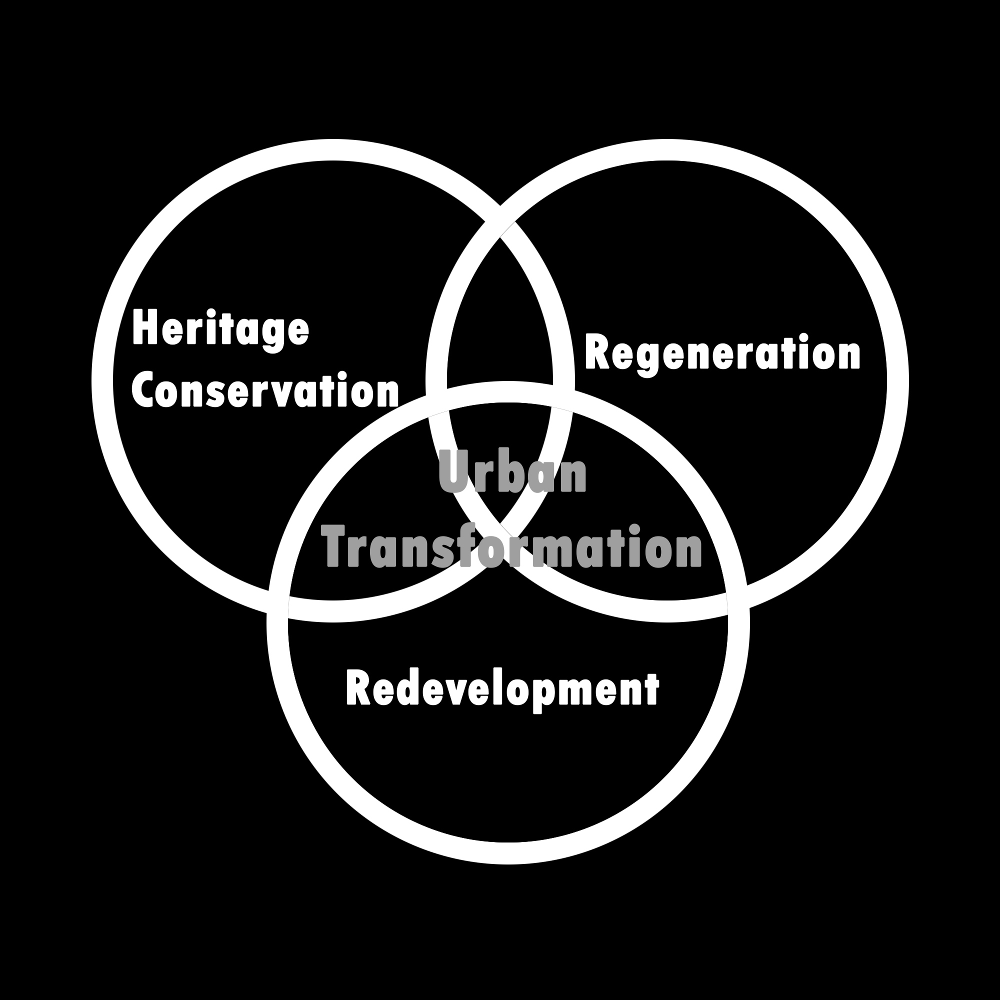

Urban Transformation
Urban Transformation evaluates three main characteristics; Heritage Conservation, Regeneration and (Re)Development. These characteristics enables areas such as cities to be revitalized or further develop by taking in any conflicts to the idea(s) and solving those to create a more refined area over a certain period of time.
